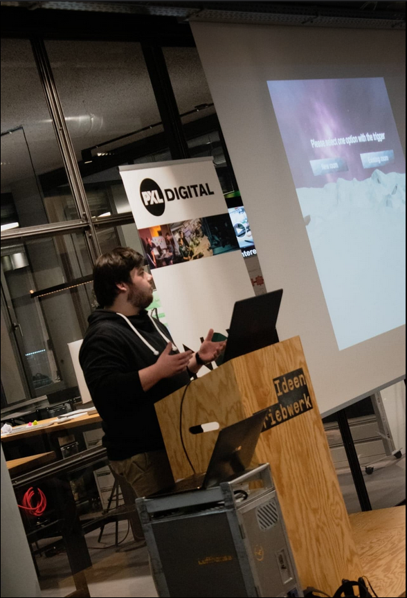
Ik ben Ian Angillis, een laatstejaarsstudent aan de Hogeschool PXL. Ik volg Toegepaste Informatica met een specialisatie in applicatieontwikkeling.
Binnen het informaticaspectrum liggen mijn interesses vooral bij gameontwikkeling en .NET. Daarbuiten probeer ik van veel markten thuis te zijn en elke dag iets nieuws te leren, ongeacht of het nuttig is of niet. Mijn interesses gaan van filosofie en geschiedenis tot muziek en games. In mijn vrije tijd hou ik mij vooral bezig met gamen, schaken, lezen en een pintje gaan drinken.
Mijn I-Talentportfolio
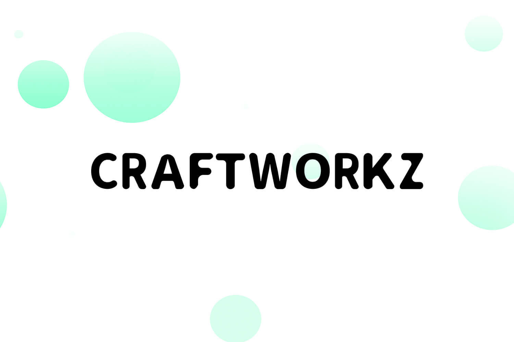
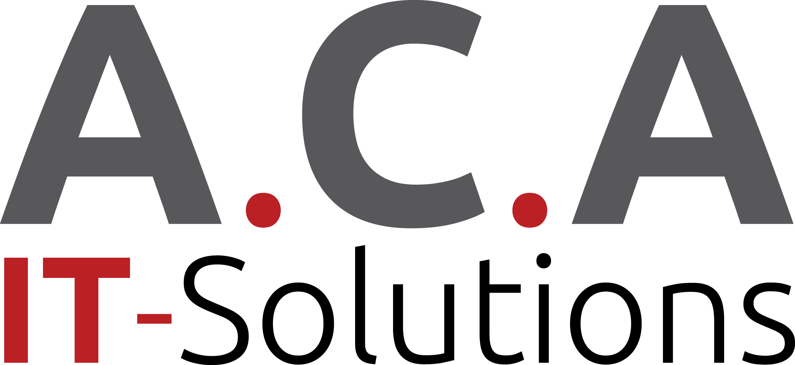
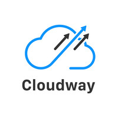
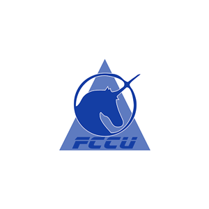
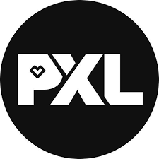
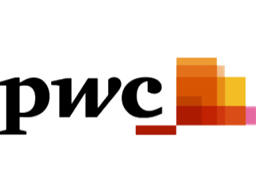

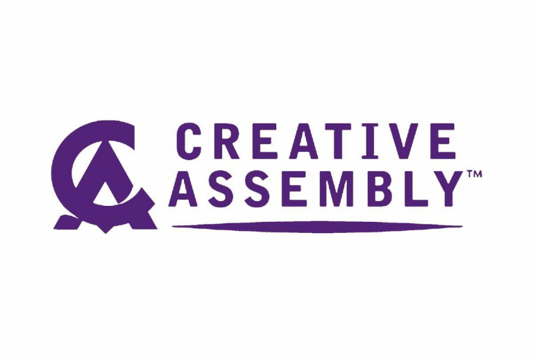
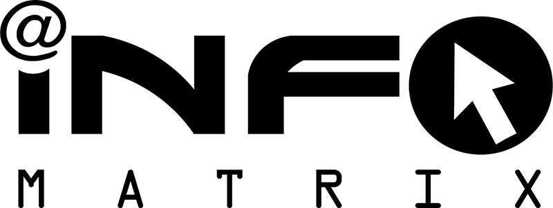
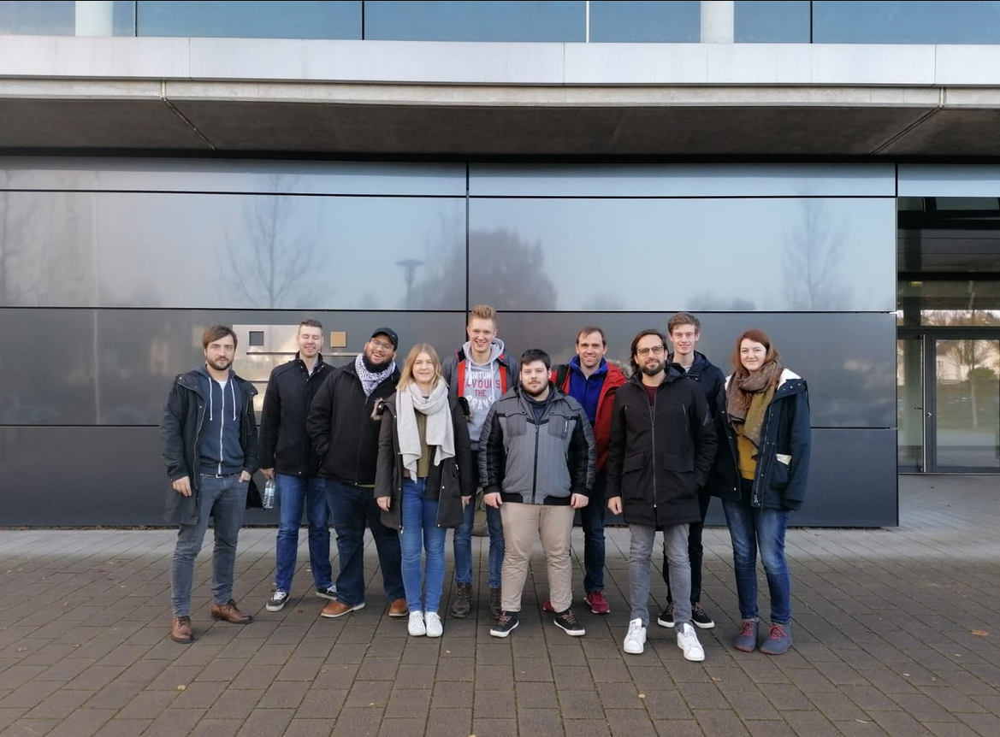
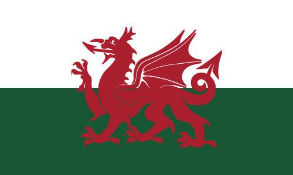
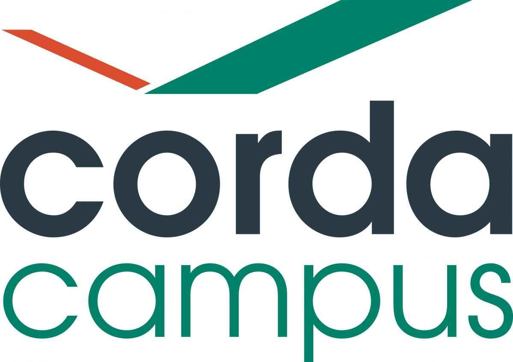

Geselecteerde activiteiten
Study Buddy
Studdy buddy aan de hogeschool PXL is een programma dat compleet in het teken staat van “Peer Assisted Learning”. Hierbij geeft een tweede- of derdejaarsstudent bijles aan, maximaal, een viertal tutees voor een bepaald vak. Meestal zijn dit de iets intensievere vakken, zoals programmeervakken.
BusIT Cardiff
De opzet van de BusIT-weken is om studenten in kleine internationale groepen vanuit partnerscholen te laten samenwerken aan een project in een internationale context. Als student kan je je technische kennis verbreden, sleutelen aan je soft-skills en internationale ervaring beleven.
Excellentieprogramma
Het excellentieprogramma van de hogeschool PXL binnen het departement PXL-Digital is een internationaal programma waarbij er wordt samengewerkt met het Duitse Fraunhofer Institute for Mechatronic System Design IEM en de universiteit van Paderborn. Enkele van de beste IT-studenten van het departement PXL -Digital kunnen via een selectieprocedure de kans krijgen om in plaats van het IT-project het excellentieprogramma op te nemen en aantonen dat ze een witte raaf zijn binnen de opleiding.
Projectweek
Het doel van de projectweek, in het tweede jaar van de bachelor toegepaste informatica aan de hogeschool PXL, is om studenten klaar te stomen om in groep samen te werken aan het researchproject. Dit gebeurt aan de hand van verschillende seminaries, workshops en evenementen onder begeleiding van zowel lectoren als professionals in het werkveld. Dit geeft studenten een kans om voor het researchproject een hecht team te vormen en hun eigen talenten te ontdekken.
Reflectie
Ik herinner nog hoe ik me voelde voor ik aan mijn bachelor toegepaste informatica begon. Twintig jaar, al twee keer een richting geprobeerd op de universiteit en al twee keer tegen de lamp gelopen. Een ezel die zich twee keer tegen dezelfde steen heeft gestoten. Toch ben ik met een positieve instelling en veel goede moed begonnen, onwetende dat ik een vlekkeloos traject zou afleggen. Derde keer, goede keer?
Hier ben ik dan, drie jaar later. In de laatste kilometer van de opleiding, de laatste sprint. Ik ben niet meer de persoon die ik was aan de startmeet van dit traject.
Er kan met zekerheid gesteld worden dat ik als persoon ben gegroeid doorheen mijn jaren aan de hogeschool PXL. Ik spreek hier niet alleen over technische en cognitieve vaardigheden, maar ook over sociale vaardigheden en persoonlijkheid.
Op het gebied van technische en cognitieve vaardigheden doel ik niet alleen op de aangeleerde concepten, programmeertalen en technologieën die in de opleiding aan bod zijn gekomen. Maar eerder op het vermogen om eender welke concept, programmeertaal en technologie uit zelfstudie aan te leren. Het vermogen om op een efficiënte manier informatie op te zoeken en deze correct te interpreteren. Want dat is waar het allemaal om draait binnen de informaticasector, levenslang leren.
Levenslang leren is iets dat is overgeslagen op mijn persoonlijkheid. Het is een ingesteldheid die me toelaat om mijn geest open te zetten voor alles en maakt me ook een toleranter persoon. Ik durf toegeven dat ik iets niet weet, ik durf mijn mening te veranderen. Ik weet niks, en alles wat ik weet kan veranderen. Vroeger was de aarde plat.
Daarnaast ben ik ook veel flexibeler als persoon geworden. Door de vele groepsprojecten aan de hogeschool PXL die op een agile manier plaatsvinden is het noodzakelijk dat je als persoon zelf ook agile bent om deze projecten tot een heel goed einde te brengen. Bij zowat alle projecten van het tweede semester van het tweede jaar bestond mijn team uit twee personen. Door zelf agile te handelen hebben we deze, ondanks het gebrek aan mankracht, tot een zeer goed einde kunnen brengen.
Niet alleen agile zijn, maar heel goed kunnen timeboxen en plannen is noodzakelijk en is iets waar ik enorm in gegroeid ben. Ik gebruik Google Calendar heel intensief als agenda waar ik zelfs mijn blokken vrije tijd in aanduid.
Door de groepswerken zijn mijn sociale vaardigheden er enorm op vooruit gegaan. In tegenstelling tot vroeger, heb ik nu geen problemen om mensen aan te spreken of een mail uit te sturen. Het woord te nemen in een groep of zelfs een positie in te nemen als leider. Hier blik ik graag terug naar mijn ervaring met excellentieprogramma waarbij ik samen met zeven andere studenten in een internationale context zelf sturing moest geven aan het team en aan het project.
Als er één kern is waar ik het meeste aan te danken heb dat ik deze opleiding tot een goed einde heb kunnen brengen dan is het zelfdiscipline. Mezelf aanleren om te beginnen studeren of te werken, zelfs als de zin en goesting ver te zoeken zijn, is cruciaal geweest en misschien wel de belangrijkste eigenschap die ik sterk verder ontwikkeld heb. Daarnaast ook bewust de tijd nemen om te ontspannen, er voor zorgen dat de boog niet altijd gespannen staat, is ook een belangrijke eigenschap.
Al deze vaardigheden zijn vertaalbaar naar heel veel andere domeinen. Ik ben er van overtuigd dat ik na het afronden van deze studie volledig klaar ben om verder te gaan studeren. Zoals ik in mijn